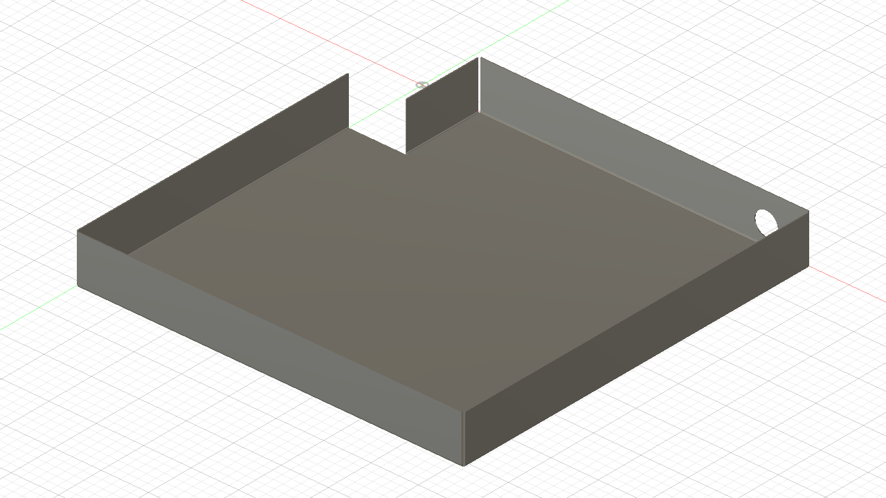
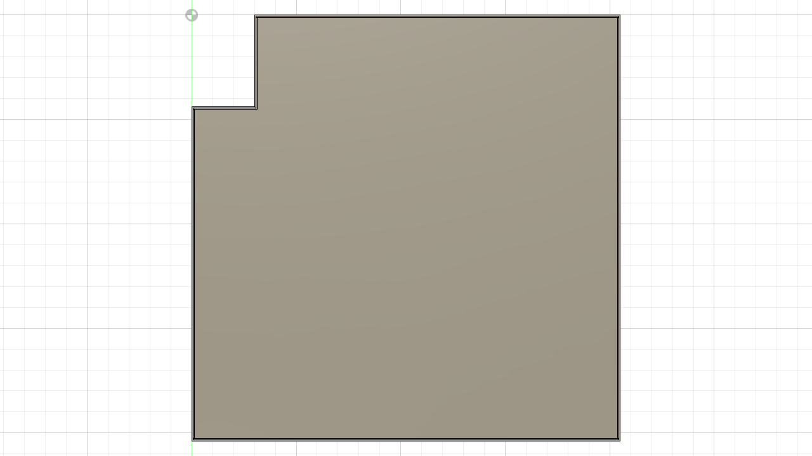
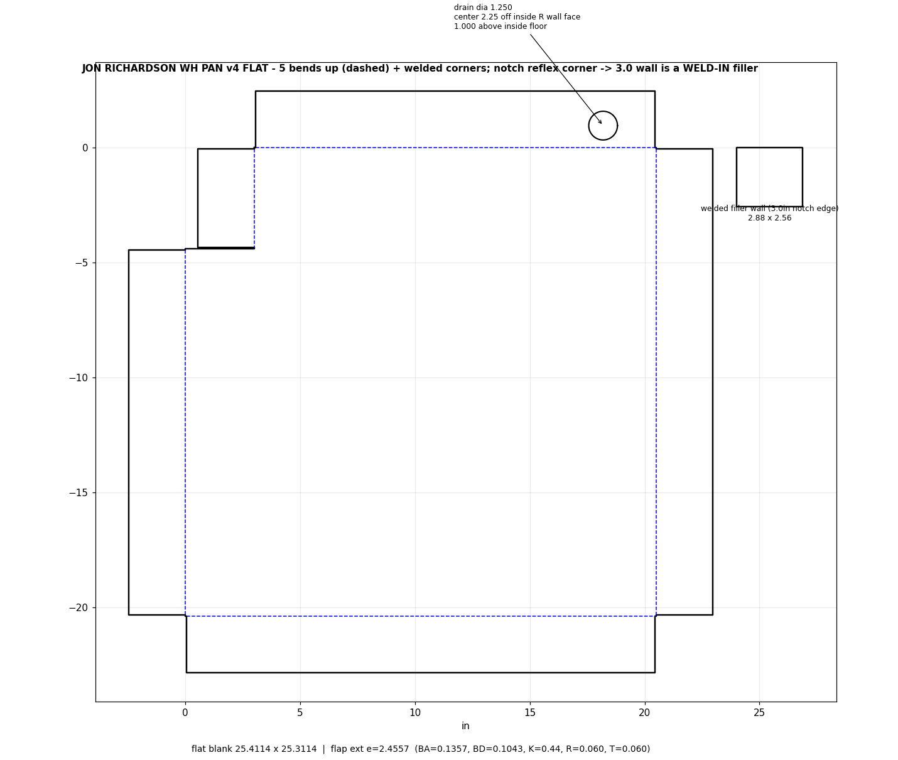

Folded pan

Top view

Flat pattern (what gets cut, then bent)

Dimensions
| Footprint | 20.5" × 20.4" with a 3" × 4.4" corner notch |
|---|---|
| Inside depth | 2.5" |
| Material | 16ga steel (0.060") |
| Drain | 1-1/4" hole in the back wall, 2-1/4" off the corner, bottom of hole 3/8" above the floor |
| Construction | Sides brake-bent up; corners left open and welded. The notch corner uses a small welded filler panel (2.88" × 2.56"). |
Questions or changes — reply to the email this link came in, or reach Dylan at DNK Fabrication.